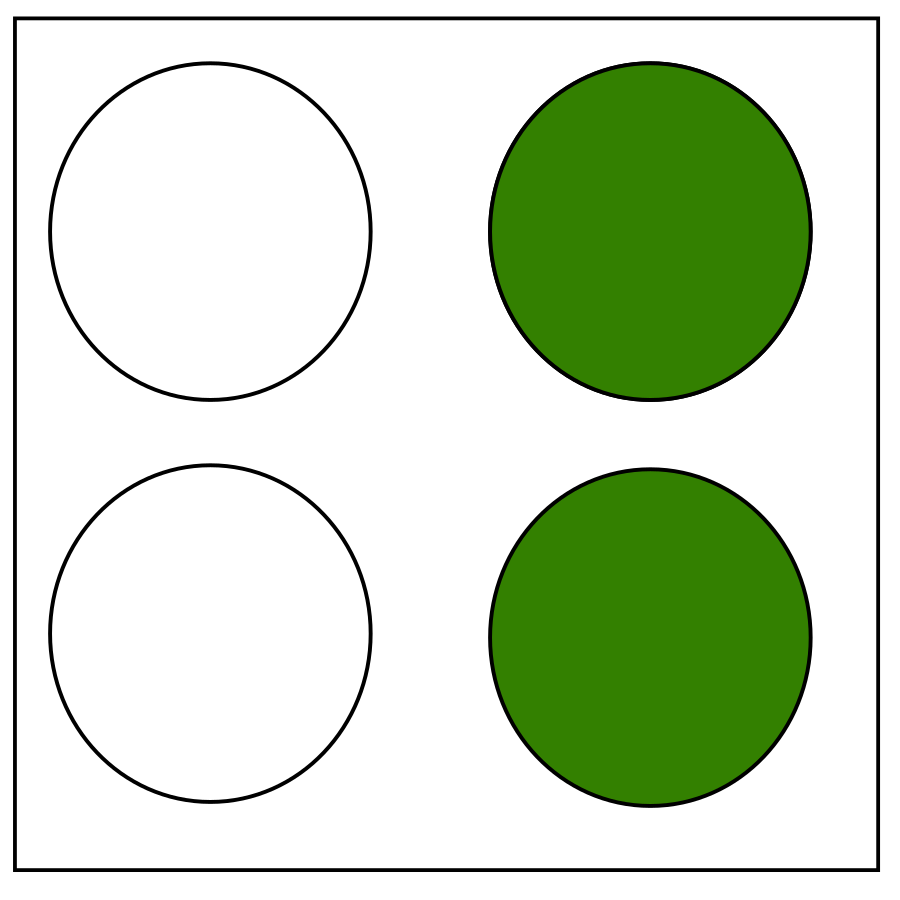
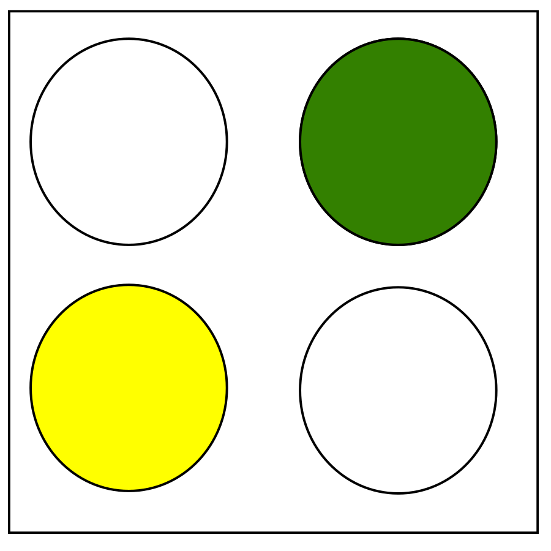
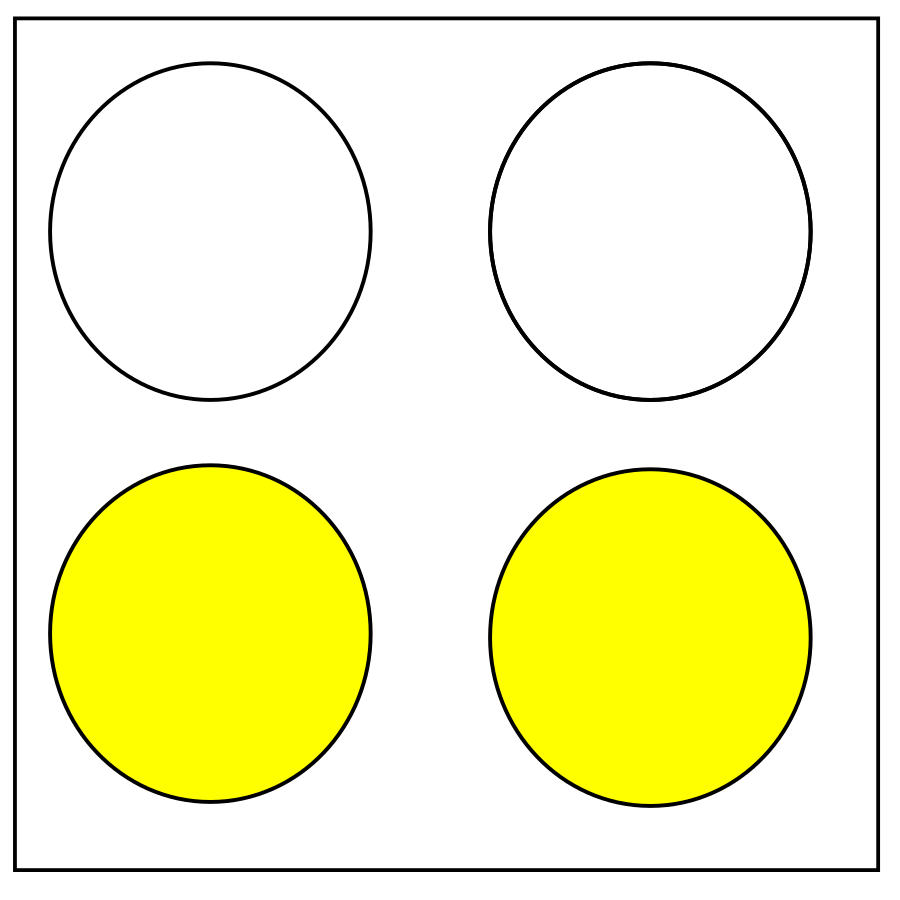
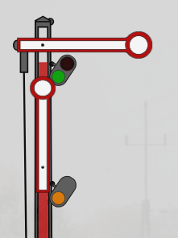
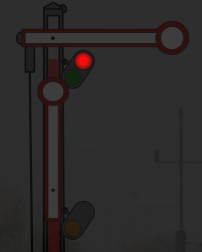
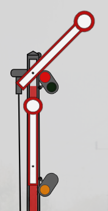
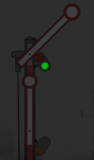
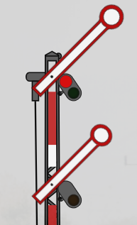
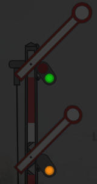

Signalling book for the S-Bahn of Mezka and Basabiostadt
This document shall be read if you wish to apply as an S-Bahn driver, as knowing the information listed below is very important to be able to pass the quiz.
The first aspect are light main signals(Lichthauptsignale). There is a total of 6 light main signals which are explained below.
Hp0: Stop
A driver must stop his train in front of a light semaphore showing this signal.
Hp1: Proceed
A driver must proceed at the speed limit. Await Hp1 at the next signal.

Hp2: Double Proceed
A driver must proceed at the speed limit. Await Hp2 at the next two signals.
Caution
A driver shall proceed with a speed of 25km/h and prepare to stop their train at the next signal.

Await preliminary caution
A driver shall proceed at the speed limit, but not faster than 100km/h.
The next signal shows Hp5.

Preliminary Caution
A driver shall proceed at the speed limit, but not faster than 70km/h.
Apart from these main light signals(Hauptlichtsignale), there is one special signal that will only appear in case of a bug with the signalling.
Broken signal/Broken signal ahead
The driver shall proceed at shunting speed(25km/h).
Some places have older types of signals known as semaphores. These are used on the branch Halbenmorgen-Luckauschitz.


Hp0
A driver must stop his train in front of a light semaphore showing this signal.


Hp1
A driver must proceed at the speed limit. Await Hp1 at the next signal.


Hp2
A driver must proceed at shunting speed(25km/h) and prepare to stop his train at the next signal.